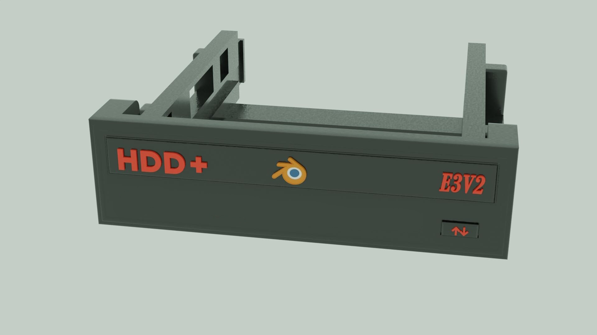
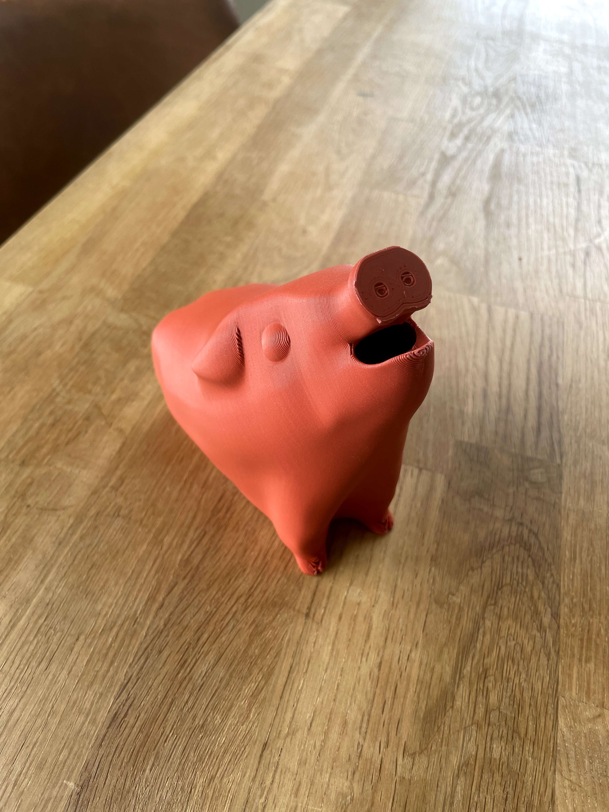

- Projets personnels
-
Bonjour et bienvenue sur mon portfolio.
Ci-dessous, vous trouverez quelques-unes de mes créations réalisées en 3D via l'application .
.
- 
- 
- Projets professionel
Salon d'une maison moderne
Salon réalisé à partir de plusieurs anciens projets, avec l'ajout de quelques références culturelles..

Requin et banc de poissons dans la mer
La scène est déjà assez ancienne, mais à ce moment-là, j'avais vraiment envie
de réaliser un environnement sous-marin.
Rendu n°13, plus clair
Rendu n°14 et compositing plus foncé, pour donner une impression plus réaliste
*Trop sombre selon les écrans et la luminosité
Backroom
J'ai eu l'envie de faire une backroom, je me suis fixé 3 heures pour réaliser le projet
Porte Torii
Une représentation de la porte Torii.

Convoyeur
Une représentation d'un système de convoyeur fantaisiste.
Essai de reproduction d'une BETA Track 50 RR
Une vidéo montrant le processus de reproduction de cette moto.
Cultivateur agricole
Modélisation et impression d'un cultivateur agricole pour miniature 1/16.

Station Fantaisiste
Ce projet consistait à reconstituer un modèle disponible sur Cult3D car le maillage n'était pas propre
et empêchait au client d'imprimer le tout en plusieurs parties
Souris Verticale
Modélisation et impression d'une souris verticale
avec 3 boutons supplémentaires


Rack Disque Dur
Adaptateur HDD de taille lecteur DVD avec rack coulissant pour HDD
Cochon
Modélisation d'une tirelire cochon sans supports pour un client
Tirelire Ourson
Modélisation d'une tirelire ourson sans supports pour le même client